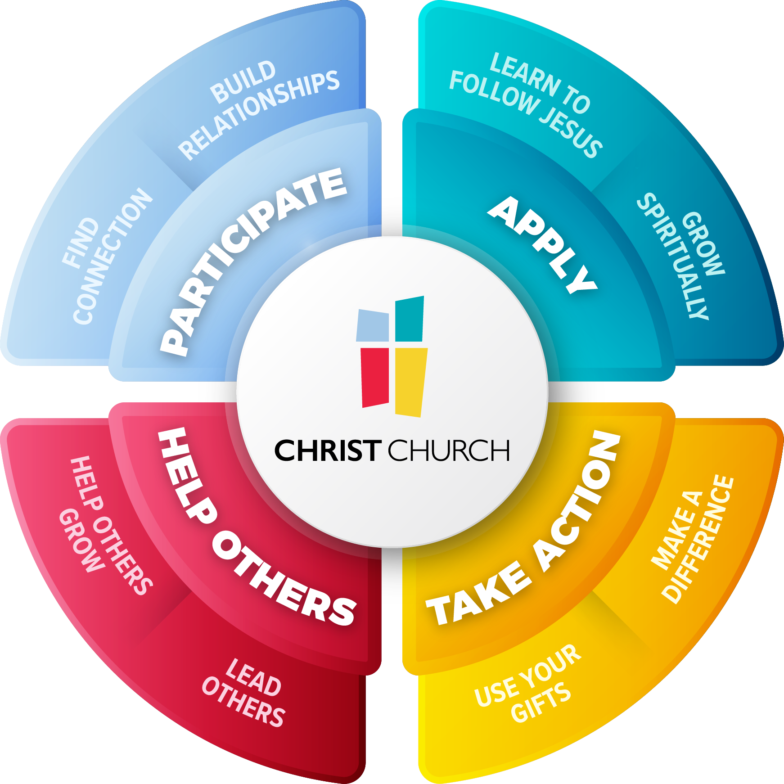

Follow Jesus one step at a time
Wherever you are in your faith, there's a next step for you, and people ready to take it with you.
See where you are on the path
PATHways is simply a clearer way to see where you are in your discipleship journey and how to continue growing to become more like Jesus.
These two assessments are one part of PATHways. They help us see where you are and the gifts and desires God has given you, so we can recommend ways for you to keep growing.
Take the assessmentChoose your path
Everyone is somewhere on the path. Pick the one that sounds most like you today.
Following Jesus, one step at a time
Discipleship is the lifelong work of becoming more like Jesus — in how you think, how you love, how you serve, and how you invest in the people around you. It's not a class to finish or a box to check. It's a daily “yes” to follow Jesus a little further than yesterday.
“Come, follow me… and I will make you fishers of men.”— Matthew 4:19
At Christ Church, this looks different for everyone, but it's never meant to happen alone. Wherever you are right now is the right place to start. PATHways is simply a clearer way to see where you are, what's next, and who's walking with you.

-
Participate
BelongDiscover hope and community. Come as you are and find your people.
-
Apply
BecomeBecome more like Jesus with daily rhythms of prayer, Scripture and community.
-
Take Action
ServePut your faith to work. Find the team that fits how God made you.
-
Help Others
MultiplyMake disciples who make disciples. Help someone else take their next step with Jesus.
Participate
Every journey with Jesus begins with belonging. Whether you attend an in-person campus or online, there's a place for you here.
Worship Services
Come any Sunday in Montclair, Rockaway or Lodi, or watch online, for about eighty minutes of lively songs and a practical message from the Bible.
Plan a visit →Join Our Church Family
Become an official member through a free, self-paced online course of eight short lessons on who the church is and what it believes.
Start the course →Connection Cards
Fill in a short card, online or on paper at a service, so the church can get to know you; then stop by the New Here? cart in your campus lobby to be greeted with a thank-you gift.
Fill in a card →Life Activity Groups
Join a group built around a shared interest, such as photography, fitness, painting or line dancing, and make friends while doing what you enjoy.
Find a group →Register your children in the check-in system, then on Sundays they enjoy safe, age-appropriate classes, from nursery through fifth grade, while you worship.
Connect your teen with Quest Teens: Friday nights in Montclair bring games, pizza, live music and a talk, plus Sunday gatherings in Rockaway and Lodi.
Women connect through book clubs, a mentoring program, events and Wednesday morning prayer, building friendships and growing in faith together.
A night of worship and prayer every few months, in Rockaway and online, open to everyone, whether you are new to faith or still exploring.
Men meet in small groups, serve together and take Warrior Within, a monthly Saturday morning course, to grow in faith, honesty and brotherhood.
Apply
Following Jesus shapes every part of your life. Here are simple ways to go deeper and become more like Him.
The Life Course
A five-week course for anyone curious about faith: share a meal, hear a short talk and discuss life’s big questions, with no pressure to speak.
Learn more →Life Groups
Meet twice a month, in person or online, with a small group of five to twelve people for real conversation, prayer and the Bible.
Find a group →Salvation Prayers
Ready to follow Jesus? Tell the church, and its pastoral team will pray with you; short videos help you start praying and reading the Bible.
Take your next step →What’s the Word? Bible Study
A monthly online Bible study on the first Wednesday evening, where the teaching team and a panel of experts unpack the Bible and answer questions.
Watch →A printable plan to read through the Bible in a year, four passages a day with catch-up days built in; start any time.
Watch Dr. Ireland’s message on the biblical principle of sowing and reaping, then make giving part of your walk with God: give at christchurchusa.org/giving, by text, Zelle or mail, or set up a recurring gift.
Care Groups meet regularly, online or in person, to support people through grief, divorce, addiction, past trauma or a loved one’s mental illness.
Strengthen your marriage in a Married Life Group, three to five couples meeting in a trained couple’s home, or through ENRICH, a marriage enrichment program.
A self-paced online course of six video lessons and guided prayer exercises, taught by Dr. David Ireland, to build a more consistent prayer life.
A self-paced online course of nine video lessons that helps you answer hard questions about Christianity with confidence and talk about your faith.
Take Action
Put your faith to work. Discover how God made you, join a team, and make a real difference in the church and beyond.
Spiritual Gifts Assessment
Answer questions about your strengths and interests, then receive a personal report on your spiritual gifts and the serving teams where they could fit.
Take the assessment →Join a Serve Team
Watch Dr. Ireland’s message Answering the Call to Serve, then pick a team, from welcoming guests to kids, media or prayer, at christchurchusa.org/serve; a leader will help you find the right fit. Most teams are for members, or people becoming members within 90 days.
Watch the message →Food for HOPE Outreach
Volunteer at the Food for HOPE pantry in Rockaway or the mobile pantry in Montclair, helping neighbors in need choose free groceries with dignity.
Volunteer →Community Outreach
Serve neighbors through the church’s CARE Center, in its teaching kitchen, community garden or art gallery, or at seasonal events like the Thanksgiving food drive.
Volunteer →Help Others
Jesus calls every follower to make disciples who make disciples. Invite a friend, walk alongside someone, and help them do the same for others.
Invite Someone to Church
Invite a friend to church, especially on Friends and Family Sunday each month, using ready-made videos and graphics you can share from your phone.
Get the tools →Leading a Small Group
Lead a small group where people are welcomed, prayed for and encouraged; you guide the conversation, not teach, and the church trains and coaches you.
Start leading →Leading a Serve Team
If you already serve, ask your team leader about taking on more, such as helping lead, train and care for the volunteers on your team.
Learn more →Mentoring / Coaching Others
Walk alongside a student or younger believer as a mentor, sharing your faith and life experience; the church trains you for the role.
Learn more →A leadership course for people who serve: six Saturday morning sessions with Dr. David Ireland and team, personal leadership assessments and a commissioning service. Dates for the next one will be announced.
Choose one person you already lead or serve with and invite them to co-lead with you for a season. Hand them more to lead until they are ready to lead on their own.
As a team captain, consider whether God is inviting you to lead a team. Talk with your team lead or staff resource person about the options.
Who walks with you
Following Jesus was never meant to be done alone. At every step, real people at Christ Church are praying for you and walking with you, from your first Sunday to the day you help someone else follow Jesus.
Pastors & chaplains
Prayer, guidance and care in every season of life.
Group leaders
People who know your name and grow alongside you, week after week.
Coaches & mentors
Experienced believers who invest in you personally and walk with you.
Take your church family with you
Watch messages, give, find groups and events, and see your next step, all in one place. Download the Christ Church app and stay connected all week long.
"This app completely changed how I engage with my church. I can find my next step, watch sermons, and connect with my group all in one place."
— Montclair Campus"The PATHways section helped me realize I'd been stuck in the same stage for two years. I finally knew what to do next."
— Rockaway Campus